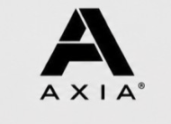

Quase 40% das empresas que exportam no Brasil são micro e pequenas — mas respondem por menos de 1% do valor exportado. O gap não é de porte, é de estrutura. Este material tem o Export Readiness Score simplificado que eu uso com clientes: 5 perguntas pra você saber, com dado e não com achismo, em qual fase sua operação está hoje.
A maioria das empresas brasileiras com produto competitivo nunca chega a exportar. O motivo raramente é o produto — é a falta de um diagnóstico real antes de qualquer decisão de mercado.
Na Itália esse número fica entre 50% e 55%. No Brasil, empresa pequena até exporta — só que quase não fatura com isso. O gargalo não é o tamanho da operação. É nunca ter medido, com critério, o que falta antes de tentar.
Responda com o que é verdade hoje, não com o que você gostaria que fosse. No fim, o placar mostra em qual fase sua operação está.
Estrutura se constrói. Porte, não.
O diagnóstico não termina num relatório. Eu assumo a frente comercial da sua expansão internacional como Diretor Comercial de Exportação fracionado — e só ganho de verdade quando você exporta.
Marcar um diagnóstico com o Leandro